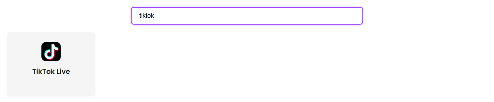

Začněte tímto postupem, pokud potřebujete jen zprovoznit chat TikTok Live.
Otevřete Podporované weby a vyhledejte TikTok. Tím si ověříte základní pravidlo nastavení, než začnete měnit OBS.

U rozšíření prohlížeče otevřete stránku živého vysílání autora a nechte chat viditelný.
https://www.tiktok.com/@CHANNEL/live

Pokud karty prohlížeče chat stále pozastavují nebo skrývají, zkuste místo toho desktopovou aplikaci.
Zvolte jedno krátké ID relace. Úplně stejné ID použijte ve zdroji TikTok, doku i OBS.
YOUR_SESSION_ID
Otevřete dok se svým ID relace. Odešlete zprávu do chatu TikToku nebo na jednu počkejte.
https://socialstream.ninja/dock.html?session=YOUR_SESSION_ID

Přidejte v OBS zdroj prohlížeče a použijte stejné ID relace.
https://socialstream.ninja/featured.html?session=YOUR_SESSION_ID

Nastavení šablony: Rychlý start šablon překryvů.
Podrobněji: Úplný průvodce TikTokem.